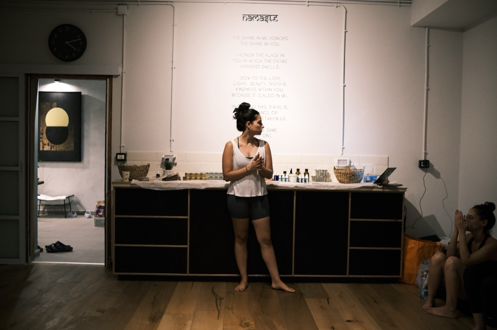

נכיר את ״בית המרקחת של הטבע״ ונרקח יחד מוצרים מפנקים — וכל משתתף לוקח הביתה את מה שרקח. זה הלהיט בכל ארגון.
סדנאות לארגונים
מחפשים פסק זמן מהמירוץ לצוות שלכם?
סדנאות חווייתיות של ארומתרפיה, רוקחות טבעית, מיינדפולנס ויוגה — לעיריות, למתנ״סים, לצוותי חינוך ולחברות. אני מגיעה עם כל הציוד, לכל מקום שתבחרו.

כבר העברתי סדנאות ל־
עיריית תל אביב · יום האישה
צוותי חינוך · סדנת רוקחות לגננות
עובדי חברות · סדנאות לצוותים
איך זה עובד
שלושה צעדים פשוטים
שיחה קצרה
מספרים לי על הצוות: כמה משתתפים, מה המטרה, איפה ומתי.
סדנה שבנויה בשבילכם
אני מתאימה את התוכן, את משך הסדנה ואת המוצרים לקבוצה שלכם.
מגיעה עם הכל
אני מביאה את כל הציוד והחומרים. אתם רק מגיעים ונהנים.
מהשטח


ככה זה נראה

בסקיצה מוצגות רק תמונות שלא רואים בהן משתתפים. תמונות נוספות מסדנאות ייכנסו אחרי אישור המשתתפים.
״היה מאוד מהנה ומלמד! כבר פרסמתי לחברות והן עפו על זה. ממליצה בחום.״
משתתפת בסדנה
שאלות ותשובות
מה כדאי לדעת
מה עושים בסדנה?
נצלול לעולם המופלא של הארומתרפיה. נריח ונכיר שמנים אתריים איכותיים ונבין את ההבדלים ביניהם, נלמד איך להשתמש בשמנים בבית בצורה בטוחה ויעילה — למבוגרים ולילדים — ונרקח יחד מוצרים מפנקים שתיקחו איתכם הביתה.
צריך ידע מוקדם?
אין צורך בידע מוקדם — רק סקרנות וחשק ליצור.
אפשר להזמין סדנה לצוות או לארגון?
בשמחה. העברתי סדנאות לעיריית תל אביב ולצוותי חינוך, ואני מגיעה עם כל הציוד. השאירו פרטים בוואטסאפ, ונבנה יחד את מה שמתאים לכם.
איפה זה קורה?
אני מקבלת בשתי קליניקות — בתל אביב ובעמק האלה. חלק מהמפגשים מתקיימים גם בזום, כך שאפשר להצטרף מכל מקום. סדנאות לצוותים ולארגונים אני מעבירה בכל מקום שתבחרו, עם כל הציוד.
בואו נבנה סדנה
ספרו לי על הצוות שלכם
משאירים פרטים — ואני חוזרת אליכם בוואטסאפ עם הצעה שמתאימה לכם.